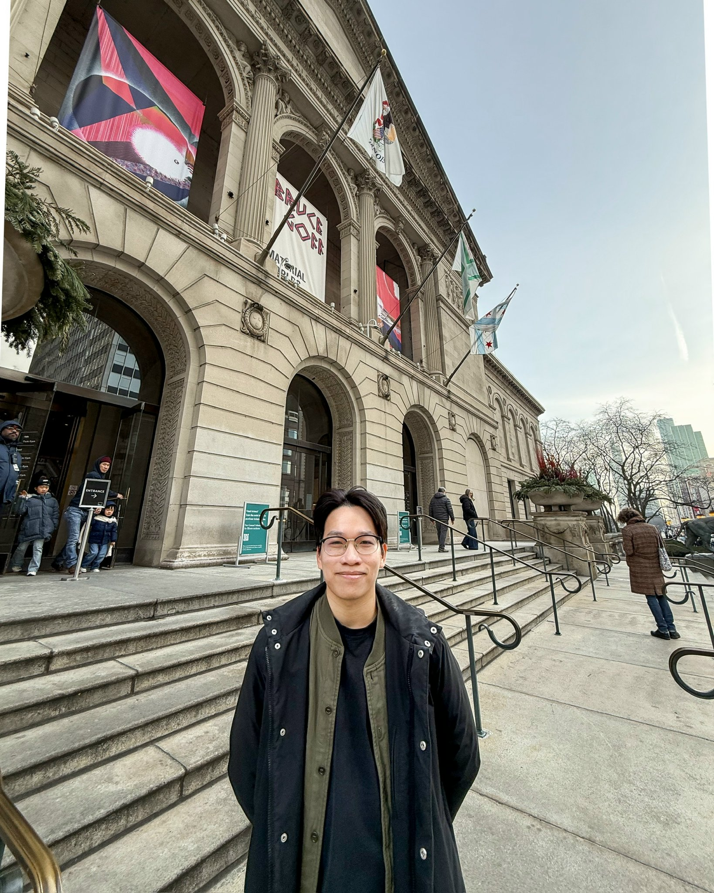

You might know me as Anh Tran. I am a fifth-year PhD student working with Ben Bakker. I will be on the job market this Fall 2026.
My broad interest is Algebraic Geometry. My research so far has been on application of nonabelian Hodge theory, as well as extending known projective results to the quasi-projective setting. Some other topics I have spent time on are Hodge-theoretic moduli spaces, and positivity coming from Hodge theory.
Here is my CV (Sep 2026).
Some seminars/reading groups I (co-)organized at UIC.
Office:
Email: quocanh (at) uchicago (dot) edu
Below are some informal notes made for talks. Any originality lies in errors!